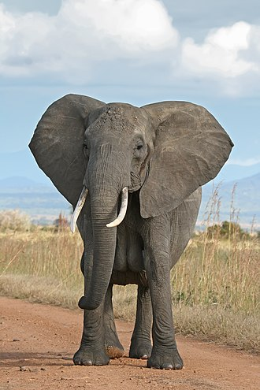

Elephantidae is a
family
of large, herbivorous proboscidean mammals collectively
called elephants
and mammoths. These are
terrestrial large
mammals with a
snout modified
into a trunk and teeth modified into tusks [3]. Most genera and
species in the family are extinct. Only two genera, Loxodonta (African
elephants) and Elephas (Asian elephants), are living.
The family was first described by John Edward Gray in 1821,
[4] and later assigned to
taxonomic ranks
within the order Proboscidea. has been revised by various
authors to include or exclude other extinct proboscidean genera.
H20

| Most famous elephants | |||
|---|---|---|---|
| Number | Name | Ref | Color |
| 1 | Manny | Ice Age | Brown |
| 2 | Dumbo | Disney | Grey |